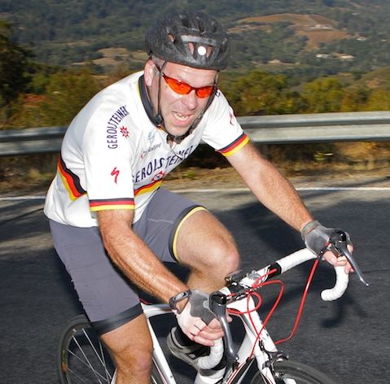

Week 4 Results: Soda Springs
24 Oct 2009
|
2009 Low-Key Hillclimbs Week 4 Results: Soda Springs 24 Oct 2009 |
|  |
| Ron Brunner continues his remarkable series, 3 for 3 over 110 points (Luke Burton photo) |
Another week of spectacular weather awaited Low-Keyers as we revisted a climb from 1997 and 1998, Soda Springs Road. Yours truly wasn't in the Bay area during those years, so got to only watch results from far-off Austin, Texas. I finally rode the climb last year, confirming that it is indeed a challenge up to the standards of even the most seasoned low-keyer. However, I admit that trial ride failed to fully prepare me for what lay ahead, and today approaching the summit I died what seemed a thousand deaths as what I thought was the summit proved to be just another turn, another transition, on what may be the longest single-road continuous climb in the Bay area (Diablo being two separate roads).
The standard setters so far: Tracy Colwell with 30:03 in 1997, and Laura Stern's 37:25 in 1998. Some thought this week's climbers would crack the half-hour, perhaps with both records getting shattered.
And it was close, oh so close. Chris Phipps, perhaps wishing he'd removed that extra bottle cage (among other things) came within a single second of Tracy's precision-timed effort to finish in an official time of 30:04. So Tracy's record stands. To be fair, Tracy likely wasn't any more careful to strip mass prior to his 1997 climb.
Eric Balfus and yours truly finished off the top 3.
Janet Martinez's time may not have been good enough to crack Laura's 11-year-old record, but was still strong enough to make it an impressive three-for-three for her this year. However, due to Mei Wei's well-timed volunteer credit (for week 3, Tunitas Creek Road, where scores were relatively low due to drafting and a turnout of strong riders), she retains her overall lead by a microscopic margin of 0.1 points. Things will change next week when we begin counting three scores for the first time this year. Recent US master's national champion in the pursuit, Mary Ellen Allen, is next, leading the women's 55+ category.
The men's standings go relatively unchanged. Chris cemented his position at the top for awhile with his excellent result, while second place Justin Lucke wasn't there today, and third place Eric Balfus discarded his score in favor his scores from the first two weeks.
In the junior rankings, for the third week out of three Andre Swart scored between 99 and 100 points to take a strong lead there. Each week he edges slowly, so slowly towards that 100 point barrier! Solid riding by Andre! He's getting close to Menso De Jong's junior scoring record of 369.85 points from 2006, the year we changed the scoring system to median-based.
In the team rankings, again scores were discarded by the big two and Western Wheelers holds a pathologically narrow lead over second-place LGBRC. As already noted, things will change @ Montevina when another score kicks in. And with their climb-leading team effort today Western Wheels has the strongest throwaway score, so LGBRC is going to have to produce an impressive result to take the lead next week. Bike Trip and Metrigear were second and third this week ahead of LGBRC and Sisters and Misters, although sharp-eyed observers will note LGBRC's score contributing to the overall rankings would have put them in a near-tie with Bike Trip for second this week (this latter score including Rich Hill's volunteer points).
So an exciting week this week, as usual!
Thanks to coordinator Gary Griffin, with help from Luke Burton, Cara Coburn, Rune Dahl, Sharlene Gee, Josh Hadley, Rich Hill, Christine Holmes, Chris Phipps, and Rikke Preisler for making today's climb possible!median time = 38:45
pl # rider team category time mph fph score 1 66 Christopher Phipps Western Wheelers 35+ 30:04 10.67 4724 128.88 2 49 Eric Balfus LGBRC 31:44 10.11 4477 122.12 3 1 Dan Connelly Low-Key 40+ 32:06 10.00 4425 120.71 4 28 Ciaran Byrne 32:12 9.97 4412 120.37 5 129 Ammon Skidmore Team Roaring Mouse 30+ 32:14 9.95 4406 120.19 6 101 Mark Edwards Bike Trip 45+ 32:15 9.95 4405 120.16 7 58 Clark Foy Metrigear 45+ 32:17 9.94 4401 120.05 8 18 Tim Clark Metrigear 40+ 32:23 9.91 4387 119.66 9 196 Dominic Pezzoni 20-24 32:30 9.87 4370 119.20 10 283 Geoff Drake Bike Trip 50+ 32:44 9.81 4340 118.40 11 315 Tom Gardin 45+ 32:59 9.73 4307 117.48 12 139 Laurent Pfertzel 45+ 33:20 9.63 4262 116.27 13 144 Andy Brisnehan Western Wheelers 50+ 33:27 9.60 4248 115.87 14 80 Bill Davis Google 25-29 33:36 9.55 4227 115.30 15 151 Doug Philippone Palantir 35+ 33:36 9.55 4227 115.30 16 32 Nils Tikkanen Bike Trip 3 33:42 9.52 4214 114.97 17 7 James Porter Western Wheelers 3 33:44 9.51 4211 114.89 18 93 Thomas Novikoff Webcor/Alto Velo 2 34:10 9.39 4157 113.41 19 259 Matt Wocasek Bike Trip 3 34:22 9.34 4134 112.78 20 23 Ron Brunner Low-Key Commuter 34:42 9.25 4094 111.67 21 410 John Walker Google 45+ 34:48 9.22 4082 111.36 22 243 Jeff Farnsworth San Jose Bike Club 50+ 35:06 9.14 4047 110.41 23 192 Michael Simos LGBRC 35+ 35:10 9.13 4040 110.20 24 291 Tim Sawyer Bike Trip 45+ 35:29 9.05 4004 109.23 25 44 Michael Chasse Bike Dads 45+ 35:30 9.04 4002 109.17 26 226 Brian Edwards Rocky Mounts/Pearl Izumi 30+ 35:38 9.01 3986 108.74 27 414 David Quincy Sponge Bob 35:48 8.96 3968 108.25 28 138 Carmelo Rios Plus 3 50+ 35:52 8.95 3960 108.03 29 244 Michael Barnes 35:57 8.93 3952 107.80 30 276 Adam Brinkman 25-29 35:59 8.92 3947 107.67 31 401 Jacob Berkman 36:04 8.90 3938 107.44 32 120 Peter Mehlitz 45+ 36:10 8.87 3928 107.14 33 98 Bruce Gardner Sr's & Mr's of No Mercy 35+ 36:35 8.77 3883 105.92 34 25 Carl Butler Sr's & Mr's of No Mercy 50+ 36:44 8.74 3866 105.47 35 420 Dave Rossow Webcor/Alto Velo 35+ 37:01 8.67 3838 104.70 36 43 Joseph Sullivan 35+ 37:05 8.65 3830 104.49 37 74 Benoit Pelczar Bike Trip 35+ 37:12 8.63 3819 104.19 38 94 Nathan Cauffman UID 30+ 37:15 8.62 3814 104.05 39 45 Sean Broeder Silicon Valley Triathlon 45+ 37:25 8.58 3796 103.56 40 323 Bart Johnson SLACer 40+ 37:33 8.55 3784 103.22 41 33 Martin Hyland Western Wheelers 50+ 37:41 8.52 3769 102.82 42 316 Christian Paquet Doogie 50+ 38:02 8.44 3735 101.90 43 87 Chuck Spiteri Pen Velo/Pomodoro 50+ 38:13 8.40 3717 101.40 44 161 Mike Salameh 55+ 38:14 8.39 3715 101.35 45 413 John Richardson Over The Hill 55+ 38:20 8.37 3706 101.10 46 115 Martin Hampton Pen Velo/Pomodoro 45+ 38:30 8.34 3689 100.65 47 59 Scott Martin Bike Trip 50+ 38:31 8.33 3688 100.62 48 56 David Vrane SLACer 45+ 38:44 8.29 3668 100.07 49 79 Gino Cetani Western Wheelers 35+ 38:44 8.29 3667 100.05 50 96 Phil Dubach Western Wheelers 35+ 38:46 8.28 3664 99.95 51 109 Shance Ordell Western Wheelers 35+ 38:50 8.26 3657 99.77 52 230 Pete Dunten SLACer 45+ 38:51 8.26 3656 99.74 53 114 Andre Swart Ryro Junior 38:52 8.26 3655 99.71 54 100 Eric Murray Webcor/Alto Velo 45+ 38:55 8.25 3650 99.57 55 140 Gary Shockey 35+ 39:11 8.19 3625 98.90 56 402 Bill Preucel Sr's & Mr's of No Mercy 45+ 39:42 8.08 3578 97.61 57 136 Fred Egley Dos Egley's 45+ 40:00 8.02 3552 96.89 58 137 Neal Herman Spike the Wonder Dog 50+ 40:14 7.98 3531 96.33 59 421 Patrick Keller 40+ 40:14 7.98 3531 96.31 60 75 Dan Cervelli Palantir 40:15 7.98 3530 96.30 61 269 Jeff Shute Google 30+ 40:17 7.97 3526 96.18 62 29 Thomas Rabedeau SLACer 50+ 40:40 7.89 3493 95.30 63 268 Vince Valvano 40:46 7.87 3485 95.07 64 85 John Carrino Palantir 25-29 40:49 7.86 3481 94.95 65 132 George Junour Santa Cruz 41:05 7.81 3457 94.31 66 422 Craig Sander 45+ 41:07 7.81 3456 94.27 67 35 Stephen Fong San Jose Bike Club 40+ 41:18 7.77 3439 93.82 68 324 Paul Melville Doogie 55+ 41:31 7.73 3422 93.36 69 332 Jens Weber Doogie 30+ 41:34 7.72 3418 93.24 70 103 Christopher Pistor 41:53 7.66 3392 92.53 71 146 William Von Kaenel LGBRC 50+ 41:56 7.65 3387 92.40 72 69 Nic Brummell Atlas 45+ 42:21 7.58 3355 91.51 73 54 Barry Burr Two legs to stand on 50+ 42:37 7.53 3334 90.95 74 303 Larry Berg 50+ 42:38 7.53 3332 90.91 75 407 Mark LaForge SS/L Cycling Club 50+ 42:47 7.50 3321 90.59 76 400 Chris Toshok RAMROD 5 43:13 7.43 3287 89.68 77 171 Scott Barry 40+ 43:30 7.38 3265 89.07 78 70 Garry Chinn Silicon Valley Triathlon 43:47 7.33 3244 88.50 79 64 Han Wen 40+ 43:55 7.31 3234 88.23 80 247 Keijiro Ikebe Livestrong Livestrong 44:18 7.25 3207 87.49 81 91 Patrick Callahan Western Wheelers 40+ 44:18 7.25 3207 87.49 82 38 Thomas Preisler LGBRC 50+ 44:33 7.21 3189 87.00 83 423 Ed Cesar Team Roaring Mouse 44:48 7.16 3171 86.51 84 125 Jerrick McCullough 40+ 46:02 6.97 3086 84.18 85 405 Pascal Bruyere 40+ 46:21 6.92 3064 83.60 86 363 James Dudley 46:35 6.89 3049 83.18 87 406 Bernhard Hiller Jelly Belly 50+ 46:40 6.88 3044 83.05 88 122 Mark Powers Pen Velo/Pomodoro 50+ 47:39 6.73 2981 81.32 89 107 Richard Allen Sr's & Mr's of No Mercy 60+ 47:48 6.71 2972 81.06 90 251 Christopher Olson Google 5 48:00 6.69 2959 80.73 91 21 Kley Cardona ACTC 45+ 48:46 6.58 2913 79.47 92 418 Tommy Abdal 5 49:42 6.46 2858 77.98 93 89 Bob Gumaer UID 50+ 49:59 6.42 2842 77.52 94 117 Bob Corman Spike the Wonder Dog 50+ 50:23 6.37 2819 76.91 95 409 Mike Ahern LGBRC 40+ 51:00 6.29 2785 75.98 96 415 Steve Youtsey Dolce Vita Cycling 4/45+ 52:04 6.16 2728 74.42 97 126 John Conklin 40+ 52:33 6.11 2703 73.74 98 253 Chris Chang Old & slow 45+ 53:20 6.02 2664 72.66
median time = 47:22
pl # rider team category time mph fph score 1 102 Janet Martinez Sr's & Mr's of No Mercy 40+ 39:47 8.07 3571 119.08 2 77 Mary Ellen Allen Sr's & Mr's of No Mercy 55+ 42:53 7.48 3312 110.46 3 416 Lisa Gordon Palantir 45+ 42:59 7.47 3305 110.20 4 411 Leah Toeniskoetter Turning Wheels for Kids 43:00 7.46 3303 110.15 5 39 Christy Cowley Sr's & Mr's of No Mercy 40+ 43:33 7.37 3262 108.77 6 8 Lucia Mokres LGBRC 43:46 7.33 3246 108.24 7 417 Lyresa Pleskovitch Western Wheelers 40+ 43:49 7.33 3242 108.13 8 301 Laura Schuster Silicon Valley Triathlon 40+ 45:47 7.01 3103 103.47 9 404 Cathy Foy Metrigear Beginner 45:50 7.00 3099 103.34 10 37 Laura Hipp Western Wheelers 46:33 6.90 3052 101.78 11 245 Laura Egley Dos Egley's 45+ 48:12 6.66 2947 98.29 12 60 Lori Fabris Sr's & Mr's of No Mercy 50+ 49:03 6.54 2896 96.57 13 412 Laura Jump Spike the Wonder Dog 4 50:25 6.37 2818 93.98 14 403 Liz Dillon Metrigear Beginner 50:25 6.37 2818 93.97 15 22 Kelly Kasik 51:38 6.22 2751 91.74 16 61 Lisa Emmerich Team Rwanda 45+ 54:56 5.84 2586 86.24 17 149 Ingrid McCarty Western Wheelers 50+ 59:03 5.44 2406 80.24 18 4 Pat Parseghian Google 50+ 62:42 5.12 2266 75.56 19 118 Christine Holmes Low-Key 40+ 66:32 4.82 2135 71.21 20 209 Christina Vaughn Google 50+ 69:04 4.65 2057 68.59
pl team score scoring 1 Western Wheelers 359.63 (Christopher Phipps, Andy Brisnehan, James Porter) 2 Bike Trip 353.53 (Mark Edwards, Geoff Drake, Nils Tikkanen) 3 Metrigear 343.06 (Clark Foy, Tim Clark, Cathy Foy) 4 LGBRC 340.56 (Eric Balfus, Michael Simos, Lucia Mokres) 5 Sr's & Mr's of No Mercy 338.32 (Janet Martinez, Mary Ellen Allen, Christy Cowley) 6 Google 322.84 (Bill Davis, John Walker, Jeff Shute) 7 Palantir 321.80 (Doug Philippone, Lisa Gordon, Dan Cervelli) 8 Webcor/Alto Velo 317.68 (Thomas Novikoff, Dave Rossow, Eric Murray) 9 Low-Key 303.59 (Dan Connelly, Ron Brunner, Christine Holmes) 10 SLACer 303.02 (Bart Johnson, David Vrane, Pete Dunten) 11 Silicon Valley Triathlon 295.54 (Sean Broeder, Laura Schuster, Garry Chinn) 12 Doogie 288.49 (Christian Paquet, Paul Melville, Jens Weber) 13 Pen Velo/Pomodoro 283.36 (Chuck Spiteri, Martin Hampton, Mark Powers) 14 Spike the Wonder Dog 267.22 (Neal Herman, Laura Jump, Bob Corman) 15 Team Roaring Mouse 206.70 (Ammon Skidmore, Ed Cesar) 16 San Jose Bike Club 204.23 (Jeff Farnsworth, Stephen Fong) 17 Dos Egley's 195.18 (Laura Egley, Fred Egley) 18 UID 181.57 (Nathan Cauffman, Bob Gumaer) 19 Turning Wheels for Kids 110.15 (Leah Toeniskoetter) 20 Bike Dads 109.17 (Michael Chasse) 21 Rocky Mounts/Pearl Izumi 108.74 (Brian Edwards) 22 Sponge Bob 108.25 (David Quincy) 23 Plus 3 108.03 (Carmelo Rios) 24 Over The Hill 101.10 (John Richardson) 25 Ryro 99.71 (Andre Swart) 26 Santa Cruz 94.31 (George Junour) 27 Atlas 91.51 (Nic Brummell) 28 Two legs to stand on 90.95 (Barry Burr) 29 SS/L Cycling Club 90.59 (Mark LaForge) 30 RAMROD 89.68 (Chris Toshok) 31 Livestrong 87.49 (Keijiro Ikebe) 32 Team Rwanda 86.24 (Lisa Emmerich) 33 Jelly Belly 83.05 (Bernhard Hiller) 34 ACTC 79.47 (Kley Cardona) 35 Dolce Vita Cycling 74.42 (Steve Youtsey) 36 Old & slow 72.66 (Chris Chang)
{kind=link}